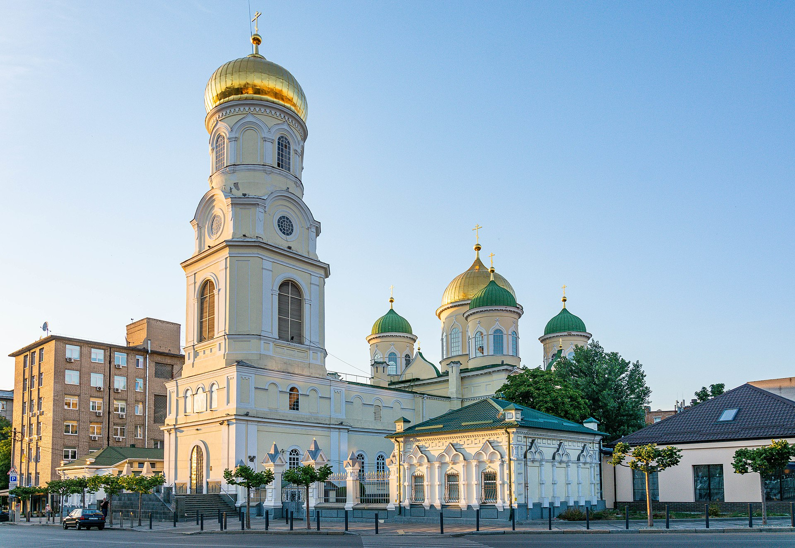

Історія вокзалу
 Собор датується початком ХІХ століття та побудований на місці маленької дерев'яної церкви в 1778 році. У той час будівля собору являла собою могутнє кам'яницю, оформлене в російсько-візантійському стилі. Дзвіниця церкви була найвищою спорудою міста Катеринослава (колишня назва Дніпропетровська). У 30-х роках ХХ століття храм закривають, розміщуючи в його будинку фуражний склад. У 1941 році в соборі проходять перші богослужіння, а з 1944 починається відновлення собору. У 90-х роках в храмі починаються реставраційні роботи, проводиться повна реконструкція будівлі собору. Навколо храму висаджуються зелені насадження і дерева. Свято-Троїцькому Кафедральному соборі Дніпропетровська перебувають шановані святині: унікальна гробниця зі Свято-Миколаївського кафедрального собору, ікони Святої Трійці і Божої Матері ( «Достойно єсть», «Іверська», «Самарська», «Казанська») і іконостас Казанської церкви. На території собору поховані священнослужителі, настоятелі собору, єпархіальні архієреї, а також знаходиться братська могила місцевих жителів, убитих в 1941 році біля собору під час бомбардувань Дніпропетровська.
Локація